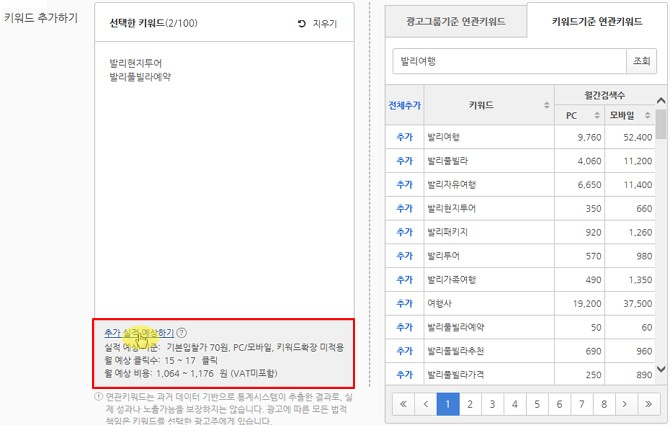

네이버 파워링크 견적 쉽게 내기
네이버 광고에서 [광고 만들기] 메뉴를 통해 광고를 손쉽게 등록할 수 있는 방법을 알아보겠습니다.
먼저 광고시스템에 접속한 뒤 왼쪽 위의 [광고 만들기] 버튼을 클릭해 시작합니다.
광고 만들기는 1단계 ‘캠페인 만들기’, 2단계 ‘광고 그룹 만들기’, 3단계 ‘광고 만들기(키워드/소재)’의 총 3단계로 이루어져 있습니다.
1단계: 캠페인 만들기
광고만들기의 첫번째 단계는 캠페인 만들기입니다. 이미 만들어진 캠페인을 사용하고자 한다면, 오른쪽 위에 있는 [등록된 캠페인 불러오기] 버튼을 클릭해 캠페인을 선택하고 바로 2단계 광고 그룹 만들기로 이동할 수 있습니다.
1. [캠페인 만들기] 화면이 나타나면 필수 입력 사항인 캠페인 유형, 캠페인 이름을 입력합니다.
- 캠페인 유형: '파워링크 유형'을 선택합니다. 사이트 검색광고 외 다른 광고 상품을 등록하는 경우, 마케팅 목적에 따라 이용하려는 상품에 맞게 캠페인 유형을 선택할 수 있습니다.
- 캠페인 이름: 캠페인 이름은 계정 에서 구분 가능한 이름으로 1~30자로 입력합니다.
- 하루 예산: 해당 캠페인에서 하루에 지불할 비용의 최대 금액을 설정하거나 제한 없이 광고를 노출할 수 있습니다. 하루예산을 설정한 경우, 하루에 발생한 과금액이 설정된 금액에 도달하면 광고 노출이 중단됩니다. [예산을 균등하게 배분 합니다.]를 선택하면 하루 예산을 균등하게 배분하여 광고 노출 빈도를 하루 동안 고르게 배분할 수 있습니다..
2. [고급 옵션]을 클릭하면 캠페인과 관련된 아래의 추가 설정을 할 수 있습니다. 고급 옵션의 세부 항목은 선택 입력 사항으로 나중에 설정할 수 있습니다. 입력 항목 작성이 끝나면 [저장하고 계속하기] 버튼을 클릭합니다.
2단계: 광고 그룹 만들기
2단계에서는 광고 그룹을 생성합니다.
1. [광고 그룹 만들기]에서 광고 그룹 이름, 웹 사이트, 기본 입찰가를 입력합니다.
- 광고 그룹 이름
- 웹 사이트: 광고의 대상이 되는 사이트를 입력하거나, 이미 입력되어 있는 사이트를 선택합니다.
- 기본 입찰가: 해당 광고 그룹에 등록되는 키워드에 동일하게 적용되는 입찰가입니다.
- 하루 예산: 하루 동안 광고 그룹에서 지출 가능한 예산을 설정합니다. 하루 예산을 설정하면 당일 해당 광고 그룹에서 과금된 금액이 설정된 하루 예산보다 많아질 것으로 예상되는 시점에 해당 광고 그룹의 상태를 '중지'로 전환하게 됩니다.
2. [고급 옵션]을 클릭하면 광고 그룹과 관련된 아래의 추가 설정을 할 수 있습니다. 고급 옵션의 세부 항목은 선택 입력 사항으로 나중에 설정할 수 있습니다.
- 매체
- 지역
- 노출 일정
- 콘텐츠 매체 전용 입찰가
- PC/모바일 입찰가 가중치
3. [저장하고 계속하기] 버튼을 클릭합니다.
4. 앞서 생성한 캠페인에 수정할 사항이 있거나 다른 캠페인을 선택하고 싶을 경우 [이전 단계] 버튼을 클릭하여 앞 단계로 돌아갈 수 있습니다.
참고. 현재 단계에서 [취소] 버튼을 클릭해도 앞 단계에서 만든 캠페인은 유효합니다.
3단계: 광고 만들기 (키워드/소재)
키워드는 아래 2가지 방법으로 추가할 수 있습니다.
또한, 선택한 키워드에 대해 추가실적예상하기 기능을 통해 월 예상 클릭수와 비용을 확인할 수 있습니다.
1. 키워드 직접 입력
좌측 ‘선택한 키워드’ 영역에 추가할 키워드를 직접 입력합니다.
키워드는 한 줄에 한 개씩 입력해 주세요.
2. 연관 키워드 선택
광고그룹기준 또는 원하는 키워드를 입력하여 연관키워드를 조회할 수 있으며, 조회 결과에서 추가할 키워드를 바로 선택할 수 있습니다.
연관키워드의 월간검색수를 PC/모바일로 구분하여 확인할 수 있으며, 키워드 좌측 ‘추가’를 클릭하여 선택한 키워드로 추가할 수 있습니다.
세부 키워드는 검색 목적이 보다 분명한 사용자들을 대상으로 광고를 노출할 수 있으며, 대표 키워드에 비해 노출수는 적지만 상대적으로 낮은 입찰가로 광고를 진행할 수 있습니다.
광고 목적에 따라 키워드를 선택하되, 광고 성과를 지속적으로 확인하면서 효율이 좋은 키워드가 무엇인지 파악하고 적극 활용하는 것이 좋습니다.
선택한 키워드 하단의 ‘추가 실적 예상하기’를 클릭하면, 해당 광고그룹에 선택한 키워드를 모두 추가했을 때 예상되는 클릭수와 비용을 확인할 수 있습니다.

3. 소재 만들기
소재는 고객이 최초로 접하는 내 상품 및 서비스에 대한 정보입니다.
여러 개 광고 중 내 광고를 클릭하게 만들기 위해서는 무엇보다 소재의 내용이 중요합니다.
내 상품과 서비스가 가지고 있는 차별성이 잘 드러나도록 소재를 작성하는 것이 좋습니다.
한 광고그룹당 소재는 최대 5개까지 등록할 수 있습니다.
소재를 2개 이상 등록할 경우, 성과가 우수한 소재가 더 높은 비중으로 노출되며 동일한 비중으로 노출을 원하실 경우 설정하실 수 있습니다.

제목은 최대 15자까지 기재할 수 있으며, 설명은 최소 20자 이상 45자 이내로 작성합니다.
연결 URL은 해당 광고그룹 등록 시 입력한 웹사이트 URL을 자동으로 불러옵니다.
웹사이트 내 세부 페이지를 연결 URL로 설정하고자 하는 경우 수정할 수 있습니다.
오른쪽에 [기존 소재 불러오기] 버튼을 통해 다른 광고에 있는 기존 소재를 불러올 수도 있습니다.
소재를 작성하면 오른쪽에 제공되는 ‘미리보기’를 통해 입력한 소재의 내용이 PC 또는 모바일에서 어떻게 보이는지 확인할 수 있습니다.
(키워드삽입 기능을 사용했다면 해당 위치에 입력한 대체키워드가 보입니다.)
작성된 소재에 대해 광고 검토 시 참고할 내용 및 서류가 있다면 검토 요청란에 기재할 수 있습니다.
모든 입력이 끝나면 [광고 만들기] 버튼을 클릭합니다.
3단계까지 모두 완료되면 광고 검토가 진행됩니다.